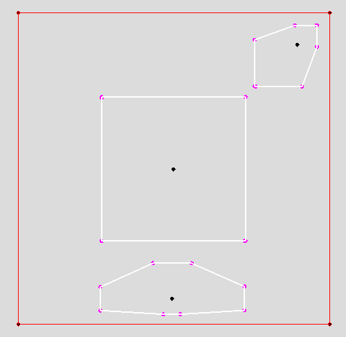

Auto-play and interactive Java applet demos:
demoHilbertGeometry.jar.
You can launch it with command
java -jar demoHilbertGeometry.jar

Hilbert balls in a convex polygonal domain with s edges have Euclidean polygonal shapes with
combinatorial structures that can range between s and 2s.
Last updated, April 2017 by Frank Nielsen.